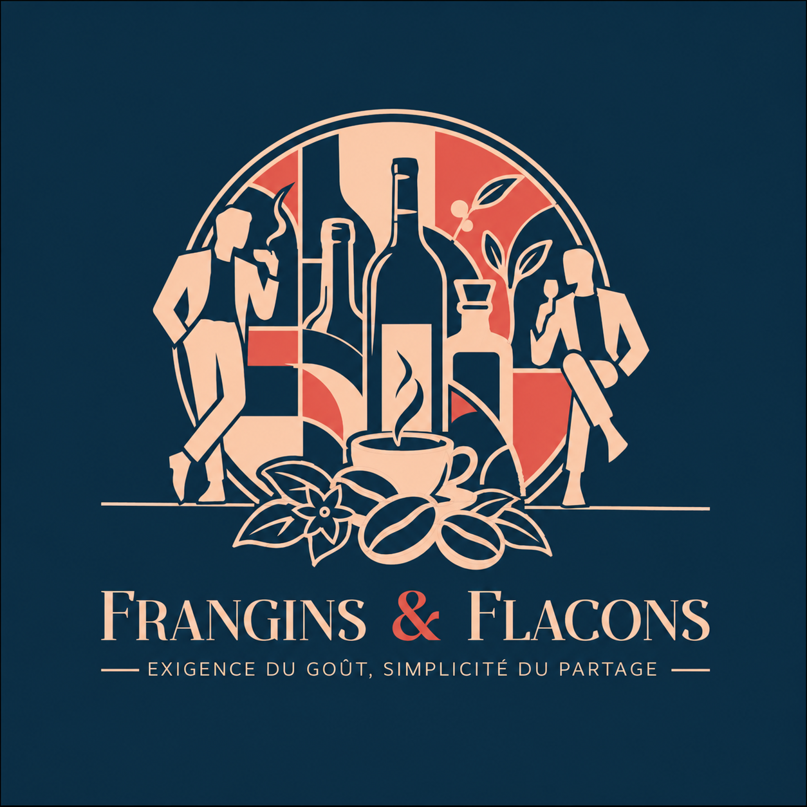

Stratégie · Signe · Typographie · Système de marque
Logos & identités
Une identité se reconnaît avant de se lire.
La création commence par l’analyse de la marque, de son positionnement et de ce qui la rend singulière. Le logo traduit ensuite cette idée en un signe simple, distinctif et mémorisable.
Une belle identité reste lisible à toutes les échelles, conserve sa force dans le temps et forme un système cohérent sur chaque support.
Les identités réunies

La Boutique du Rhum
Création d’un univers graphique destiné à rendre la boutique immédiatement identifiable. Le signe et la composition installent une identité forte, lisible et adaptée à la vitrophanie.


Maison Célestine
Création du logo et de l’univers visuel d’un lieu de réception en Provence. Le monogramme, les couleurs et les applications construisent une identité élégante, chaleureuse et liée à son territoire.


Owl Hair Salon
Recherches créatives autour de la chouette et de l’univers de la coiffure. Les différentes pistes montrent la construction progressive d’un signe lisible, distinctif et adaptable à l’enseigne comme aux supports imprimés.

Kulte
Création du logo Kulte pour un menuisier spécialisé dans les assemblages de précision. Le signe traduit la rigueur du geste, l’exigence des proportions et la maîtrise des emboîtements. Une identité sobre et construite, pensée comme une pièce de belle manufacture, où chaque élément trouve exactement sa place.

Aurea Imaging
Création d’une identité pour une entreprise spécialisée dans l’imagerie et la cartographie par photographie satellite. Le signe associe précision technique, vision et lecture du territoire.

Joséphine
Création d’une identité graphique pensée pour un lieu nocturne et singulier. La typographie et le signe installent une personnalité élégante, mémorable et adaptée aux supports du bar.

Louise Law
Conception d’une identité sobre et structurée pour un cabinet bruxellois. Le système graphique recherche l’équilibre entre autorité, clarté et modernité.

Identité pour l’industrie du bois
Création d’une identité pour une entreprise belge de l’industrie du bois. Le signe puise son inspiration dans les anciens symboles vikings et leur langage graphique direct, construit et protecteur. Réinterprétés dans une forme contemporaine, ces codes évoquent la solidité, l’héritage artisanal et la maîtrise de la matière.


Identité pour l’œnologie
Conception d’une identité destinée à un expert de l’élaboration de vins effervescents. Le projet associe expertise, finesse et mouvement dans un système graphique cohérent.

Frangins & Flacons
Une cave à vins et spiritueux, du café de qualité et l’esprit chaleureux d’un club anglais. Frangins & Flacons imagine deux gentlemen qui invitent à découvrir leurs trouvailles et à prendre le temps de les apprécier. L’identité traduit cette complicité dans une composition aux accents rétro : personnages, flacons et arômes composent un univers entre élégance et décontraction. L’exigence du goût, la simplicité du partage.

Exacode
Création du logo, de la charte graphique et des principes d’application. L’identité est conçue comme un système lisible et fiable, utilisable sur l’ensemble des supports de l’entreprise.


Almé Paris
Création d’un isotype et d’une nouvelle signature de marque, puis déclinaison sur les bijoux, les sacs, les étiquettes et les accessoires. Le double A devient un signe central, immédiatement reconnaissable.

Maison Boanton
Conception de l’identité visuelle de la maison horlogère : positionnement, logo, langage graphique et cohérence des applications. L’univers accompagne la création des collections et leur présentation.

FAMA
Création de l’identité FAMA pour une supérette de quartier qui réunit épicerie, cave à vins et cave à manger. Le quadrillage rouge s’inspire des carreaux de faïence des anciens commerces de bouche et rappelle les nappes à carreaux des pique-niques. Ce langage graphique simple et familier installe une image chaleureuse, populaire et conviviale, liée aux bons produits et au plaisir de partager.